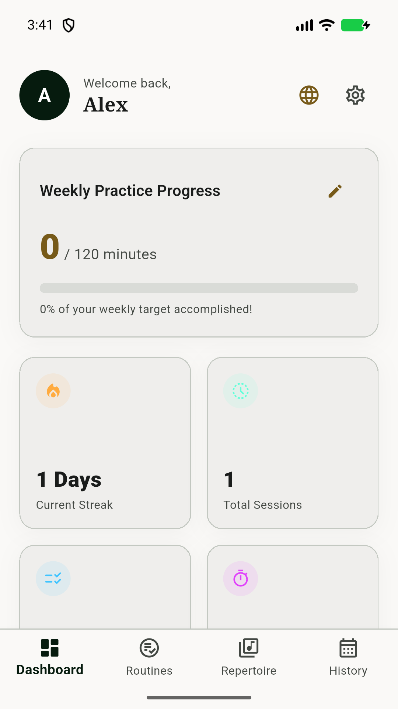
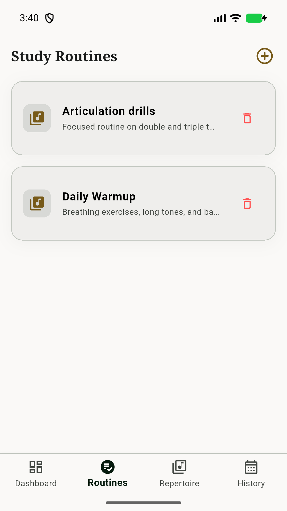
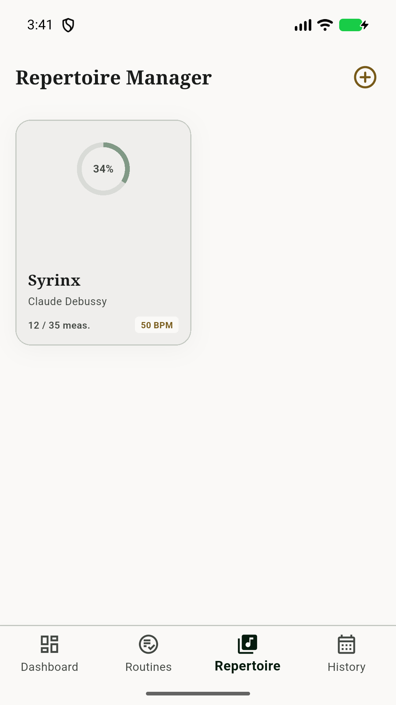
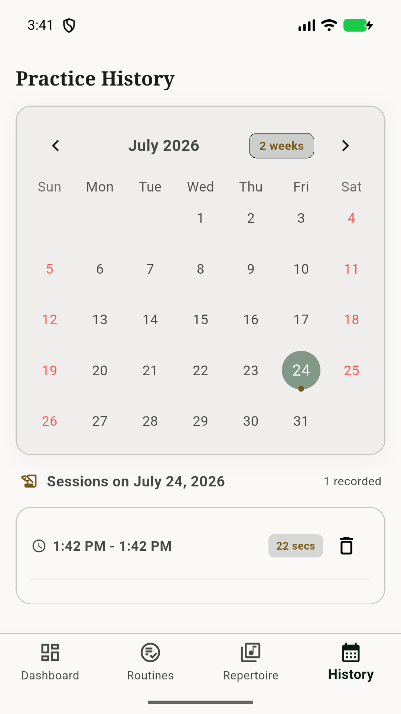

Task-relevant practice matters
A meta-analysis found a substantial association between task-relevant practice and musical achievement.
Read the study ↗Evidence-informed practice for flutists
Turn one musical goal into a focused session with a precise tempo, optional local pitch feedback, and a private record of what to do next.
Private by default · English & Spanish · No account required

We measure only aggregate page and activation counts to improve this experience. We never send journal, audio, profile, or pitch data. Privacy details.
What the research can—and cannot—say
Research on musicians points toward structured goals, focused feedback, and reflection. The app is designed around those behaviors; it does not promise a shortcut or replace a teacher.
A meta-analysis found a substantial association between task-relevant practice and musical achievement.
Read the study ↗A study of student guitarists and pianists found different benefits from auditory feedback during practice.
Read the study ↗Self-regulation research connects planning, emotional regulation, expertise, and practice behavior.
Read the study ↗These are associations from music research—not a measured claim that this app causes improvement. See the full evidence brief.
From intention to insight
Flute Practice Coach helps you decide what to work on, stay present while you practice, and learn from the time you put in.
Create technical routines for tone, scales, articulation, and whatever your playing needs next.
Start an exercise instantly, hear its exact tempo, track pitch locally when useful, and record a short self-evaluation.
Follow repertoire progress, calendar history, streaks, pitch summaries, and private recordings—and add a missed session to any past date.
Export routines and practice history as a versioned file, then safely merge them on another device. Audio and PDFs stay behind.
Meet your next practice session
One clear exercise, a comfortable tempo, and a note for tomorrow.
A low-friction way to remember what you were working on and rebuild consistency.
Exercise-level tempo, intonation feedback, repertoire context, and a history you can discuss with a teacher.
Designed for the practice room
A warm, uncluttered interface keeps your music—not the app—at the center of every session.



Private by design
The app has no online account or advertising. Your profile, journal, imported scores, and recordings are managed locally by the app. The deployed web app and landing page may use optional aggregate Plausible counts; they never receive practice content.
Good to know
No. Enter a display name to create a profile stored by the app on your device.
Yes. The tuner, exercise intonation tracking, and recording are optional; all other features remain available if you deny microphone permission.
Your profile and journal use browser storage. PDF importing and viewing are mobile-only, and browser recordings are available only during the active practice session—not in history. Clearing site data can remove the browser journal.
No. The app does not operate a server or transmit your journal, PDF scores, or recordings. Your device platform may separately include app data in backups you enable.
Delete individual sessions or repertoire items, or use Erase all data in Settings to remove the local profile and app-managed files.
Practice thoughtfully
Try the browser workflow today; iPhone and Android releases are being prepared.